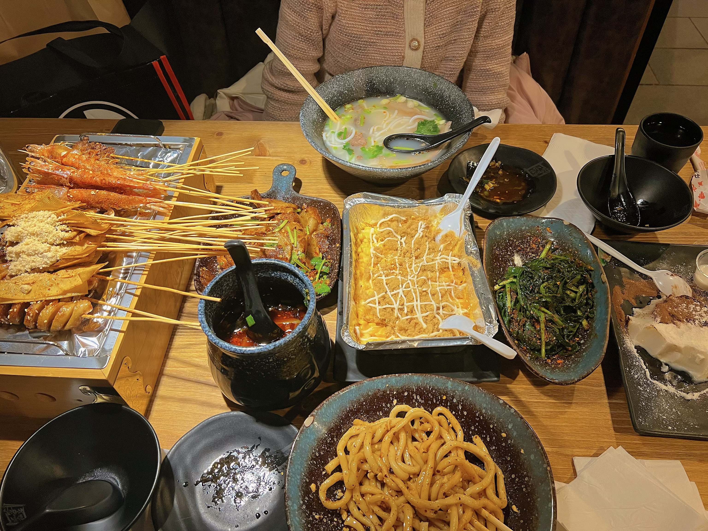
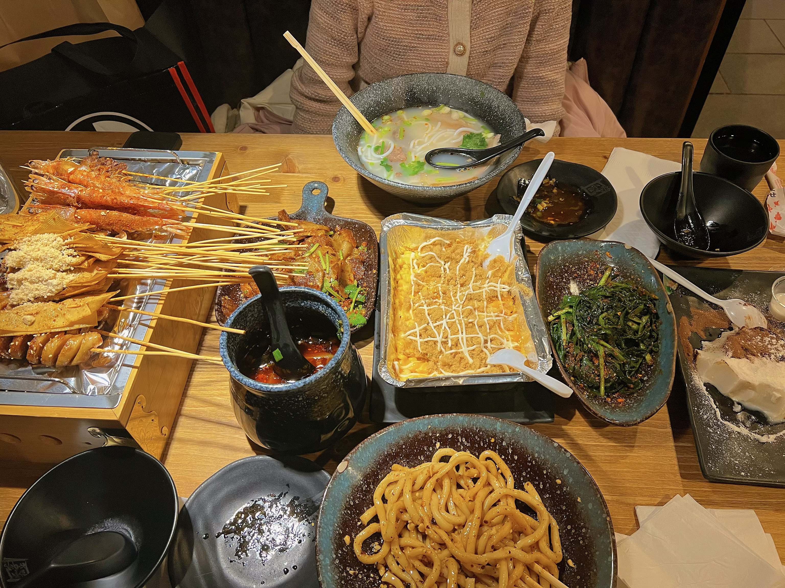

Who is Sophie Wang?
Sophie Wang is a cool girl with a unique personality – yes, that's me! I am a free-spirited and whimsical soul, wandering thousands of kilometers away. I love lying on lush green grass, inhaling the earthy fragrance, and gazing at the leisurely drifting clouds in the sky. People around me often remark that I may seem a bit melancholic, but that's merely the initial impression my distinctive appearance gives! I enjoy immersing myself in this world, savoring the tranquility bestowed by nature. Additionally, I delight in exploring the realms of the mind, engaging in discussions on thought-provoking topics.
Do you wanna make friend with me?
I am a slow-warming and sincere person; after spending some time with me, you'll discover that I have many quirky thoughts. I enjoy the thrill of an adventurous life, and if you were to ask me at 3 am if I want to go to the lakeside to stargaze, I think I would wholeheartedly say yes!
MY Email Address✉️: x78wang@uwaterloo.ca
Becoming friends with me will undoubtedly bring joy into your life! If you're eager to get to know me, feel free to reach out by clicking on my email!üëÜüèº


 
